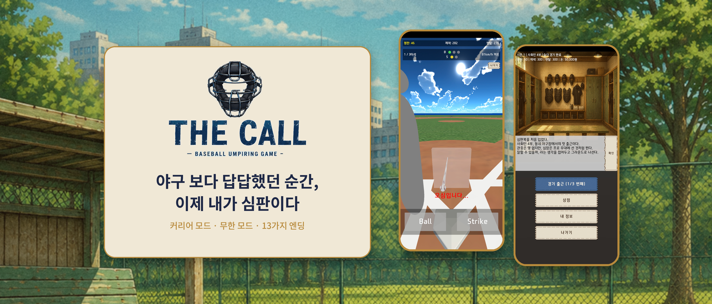
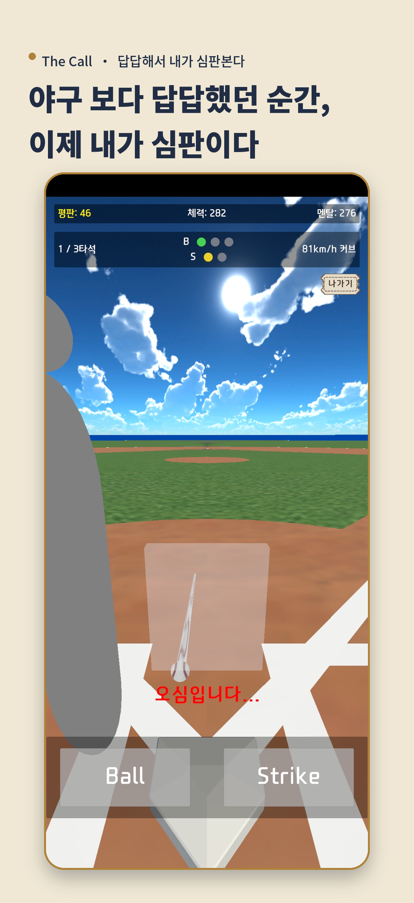
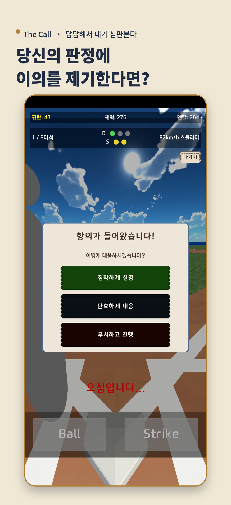
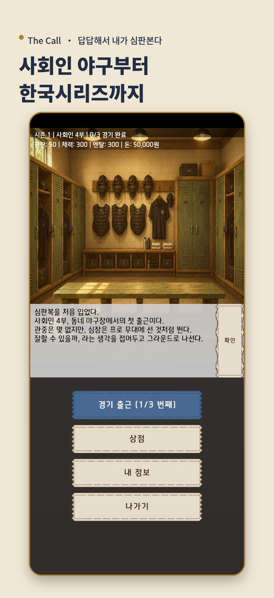
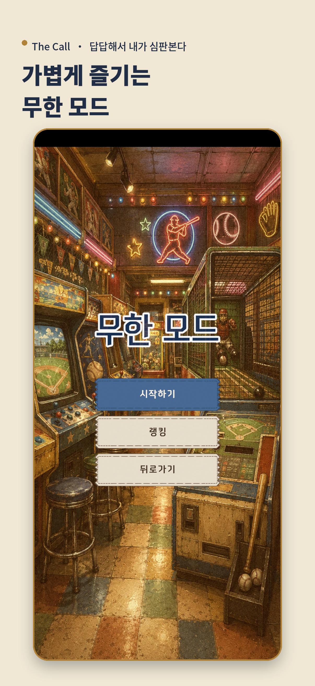

The Call · 답답해서 내가 심판본다
야구 보다 답답했던 순간,
이제 내가 심판이다.
공 하나에 경기의 흐름이 바뀝니다. 빠르게 판정하고, 선택을 쌓아 나만의 심판 커리어를 만들어보세요.
iOS · Android 출시 완료 · 한국어 / English / 日本語

01
한 투구, 한 판정
실제 투구의 순간을 보고 Ball과 Strike를 직접 콜합니다.
02
심판 커리어
아마추어 디비전부터 한국시리즈까지 경기와 선택을 이어갑니다.
03
끝없는 콜
무한 모드에서 준비 없이 시작하고 판정 감각을 시험합니다.
Scenes
심판의 시선으로 플레이하세요.
판정의 긴장감부터 경기 전후의 선택까지, 한 시즌의 흐름을 직접 경험합니다.




두 가지 플레이 방식
| 커리어 모드 | 아마추어 디비전부터 한국시리즈까지 심판 커리어를 쌓고, 경기 판정과 컨디션 관리로 다음 리그에 도전합니다. |
|---|---|
| 무한 모드 | 복잡한 준비 없이 바로 시작해 판정 감각을 시험하고, 매 판 새로운 기록을 쌓습니다. |